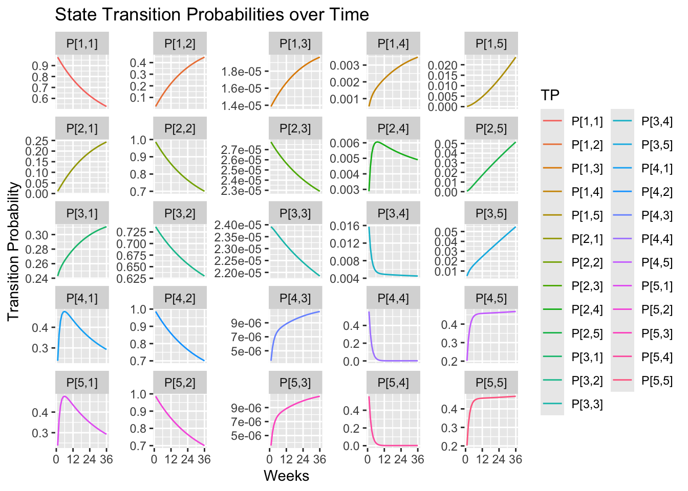
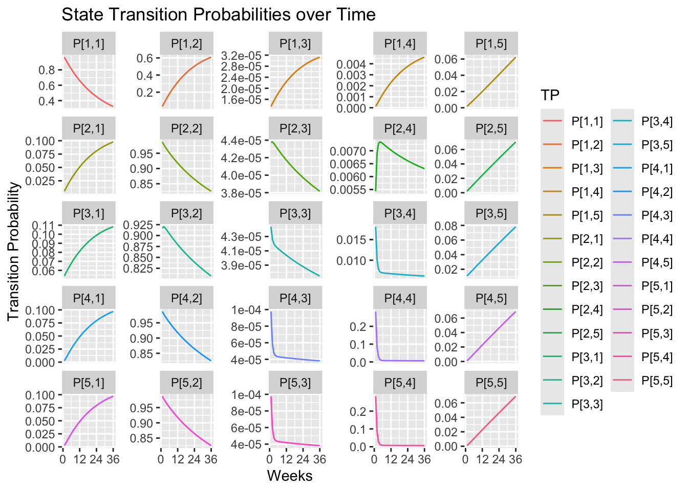

Estimating the Generator Matrix for a 5 State Continuous Time Markov Chain via the EM Algorithm
This post complements the Bayesian approach developed in the previous post A Simple Bayesian Multi-state Survival Model for a Clinical Trial by presenting a Likelihood based method for estimating the generator matrix for a 5-state Markov chain from incomplete data. The method uses an EM algorithm based on the work of Bladt and Sørensen and implemented in Marius Pfeuffer’s ctmcd R package to reconstruct Likelihood function via the integral equations for conditional expectation.
The Data
Before describing the data used in both in this post and the above mentioned post, I’ll load the R packages used along with a helper function that will make it esier to follow the code.
R Packages
library('dplyr')library('ggplot2')library('stringr')library('tidyverse')library('matrixcalc')library('LaplacesDemon') # for Dirichlet distributionlibrary('diagram')library('expm') # for matrix exponentiationlibrary('ctmcd') # for continuous-time Markov chain models
The data originates from a four arm randomized trial comparing treatments for asthma management, including Seretide and Fluticasone, conducted by Kavuru et al. [3]. I report the data as presented in the text by Welton et al. [5] and the paper by Briggs et al. [2]. For each treatment, data comprise the number of patients observed in each of five health states at the end of each week for a 12-week follow-up period. The states are defined as follows: STW= successfully treated week, UTW= unsuccessfully treated week, Hex= hospital-managed exacerbation ,Pex= primary care-managed exacerbation, and TF= treatment failure. Although observations were apparently made each on a weekly basis, we only have the final observation after the twelth week to work with.
As in the previous post, the progress of patients pasing through various states of health as they undergo for asthma is modeled by the following 5-state Markov chain. In the present analysis, I fit the model to a Continuous Time Markov Chain (CTMC) so a little background on continuous time Markov chains is in order. A Continuous-Time Markov Chain (CTMC) is a stochastic process \(X(t), t \ge 0\) over a finite or countable state space, \(S\), such that the process satisfies the Markov property: the future state depends only on the current state, not on the past history. \[P(X(t + s) =j | X(s) = i, history) = P(X(t + s) =j | X(s) = i)\] Hence, just like a discrete time Markov chain, a CTMC is memoryless. However, unlike a discrete time Markov chain where the behavior of the process is determined by a matrix of transition probabilities, the dynamics of a CTMC are determined by its generator matrix \(Q\) which has the following following properties:
For \({i \neq j}\), the off-diagonal entries \(q_{ij} \geq 0\) represent the instantaneous transition rate from state \(i\) to state \(j\).
The diagonal entries are defined such that each row sums to zero: \(q_{ii} = -\sum_{j \neq i} q_{ij}\)
The time-dependent probability matrix for a CTMC may be derived from either the Kolmogorov forward equation: \(\frac{d}{dt} P(t) = P(t) Q\) or the Kolmogorov backward equation is: \(\frac{d}{dt} P(t) = Q P(t)\)
The memoryless property dictates that the amount of time the process stays in a state \(i\) before transitioning to another state \(j \ne i\) is governed by an exponential distribution with rate: \(q_{i}=\sum _{j\ne i}q_{ij}\). Hence sojourn time in state \(i\) is given by the exponential distribution: \(P(T_{i}>t)=e^{-q_{i}t}\) with mean sojourn time: \[E[T_{i}]=\frac{1}{q_{i}}=\frac{1}{\sum_{j\ne i}q_{ij}}\]
The Likelihood Solution
If complete continuous time data were available it would be straightforward to compute the Likelihood function for the \(Q\) matrix.
where \(N_{ij}(T)\) denotes the number of transitions from \(i\) to \(j\) within time \(T\) and \(R_i(T)\) gives the cumulative sojourn times in state \(i\) before the process jumps to another state. In this case, a single off-diagonal element of \(Q\) would look like:
However, we don’s have complete data. The two data matrices represent data observed only at times 0 and \(T\). Nevertheless, we can estimate \(N_{ij}(T)\), \(R_i(T)\), and \(Q(T)\) via the wizardry of Bladt and M. Sørensen who laid out ttwo computation to solve two frightenly complicated conditional interal equations via the EM algorithm. (See the ctmcd package vignette for a first look at the equations.)
Generating Matrix (Q) and Transition Probability Matrix (P)
This section calculates the Q matrix and some basic properties for the CTMC models of the Seretide and Flucticasone treatments using the EM algorithm described above. Note that the argument to the gm() function is set to 1 because the tdata were collected at 1 week intervals. However, values computed for the \(Q\) matrix and transition probability matrix refer to week 12, the tim at which the data matrices were compiled. Later we will compute the values for \(Q\) and \(P\) at times 1 week, 2 weeks etc. by dividing the time interval by 12.
Time <-seq(1/12,3,by =1/12)TP_Mat_s <-TP5(Q = Q_s, Time = Time)probs_s <-as.data.frame(TP_Mat_s[1])Weeks <-1:length(Time)TP_s <-cbind(Weeks, TP_Mat_s[2], probs_s)names(TP_s) <-c("Weeks", "Time","P[1,1]", "P[1,2]", "P[1,3]", "P[1,4]", "P[1,5]","P[2,1]", "P[2,2]", "P[2,3]", "P[2,4]", "P[2,5]","P[3,1]", "P[3,2]", "P[3,3]", "P[3,4]", "P[3,5]","P[4,1]", "P[4,2]", "P[4,3]", "P[4,4]", "P[4,5]","P[5,1]", "P[5,2]", "P[5,3]", "P[5,4]", "P[5,5]")#head(TP)df_long_s <- TP_s %>%pivot_longer(cols =starts_with("P["), # Selects all columns starting with "P["names_to ="TP", # New column for the original column namesvalues_to ="Value"# New column for the values )Probs_s <- df_long_s |>ggplot(aes(x = Weeks, y = Value, color = TP)) +geom_line() +facet_wrap(~ TP, scales ="free_y") +scale_x_continuous(`breaks`=seq(0, length(Weeks), by =12)) +labs(title ="State Transition Probabilities over Time",x ="Weeks", y ="Transition Probability")Probs_s

Fluticasone Probabilities over time
Show the Plot Code
Time <-seq(1/12,3,by =1/12)TP_Mat_f <-TP5(Q = Q_f, Time = Time)probs_f <-as.data.frame(TP_Mat_f[1])Weeks <-1:length(Time)TP_f <-cbind(Weeks, TP_Mat_f[2], probs_f)names(TP_f) <-c("Weeks", "Time","P[1,1]", "P[1,2]", "P[1,3]", "P[1,4]", "P[1,5]","P[2,1]", "P[2,2]", "P[2,3]", "P[2,4]", "P[2,5]","P[3,1]", "P[3,2]", "P[3,3]", "P[3,4]", "P[3,5]","P[4,1]", "P[4,2]", "P[4,3]", "P[4,4]", "P[4,5]","P[5,1]", "P[5,2]", "P[5,3]", "P[5,4]", "P[5,5]")#head(TP)df_long_f <- TP_f %>%pivot_longer(cols =starts_with("P["), # Selects all columns starting with "P["names_to ="TP", # New column for the original column namesvalues_to ="Value"# New column for the values )Probs_f <- df_long_f |>ggplot(aes(x = Weeks, y = Value, color = TP)) +geom_line() +facet_wrap(~ TP, scales ="free_y") +scale_x_continuous(`breaks`=seq(0, length(Weeks), by =12)) +labs(title ="State Transition Probabilities over Time",x ="Weeks", y ="Transition Probability")Probs_f

Fundamental Matrix for Absorbing Continuous Time Markov Chains
Let V be the sub matrix of the generator matrix, Q, comprising the transient states. Then the matrix \(F = -V^{-1}\) is called the fundamental matrix. For all transient states \(i\) and \(j\), \(F_{ij}\) is the time that a process started in state \(i\) spends in state \(j\). Then for each state i, \(T_a = \sum_{j}F_{ij}\) is the mean time to absorption.
[3] Briggs AH, Ades AE, Price MJ. Probabilistic Sensitivity Analysis for Decision Trees with Multiple Branches: Use of the Dirichlet Distribution in a Bayesian Framework. Medical Decision Making, 2003
[4] Kavuru M, Melamed J, Gross G, Laforce C, House K, Prillaman B, Baitinger L, Woodring A, and Shah T, (2000) Salmeterol and fluticasone propionate combined in a new powder inhalation device for the treatment of asthma: a randomized, double-blind, placebo-controlled trial
[5] Welton NJ, Sutton AJ, Cooper NJ, Abrams KR, and Ades AE (2010) Evidence Synthesis for Decision Making in Healthcare. Cambridge University Press.